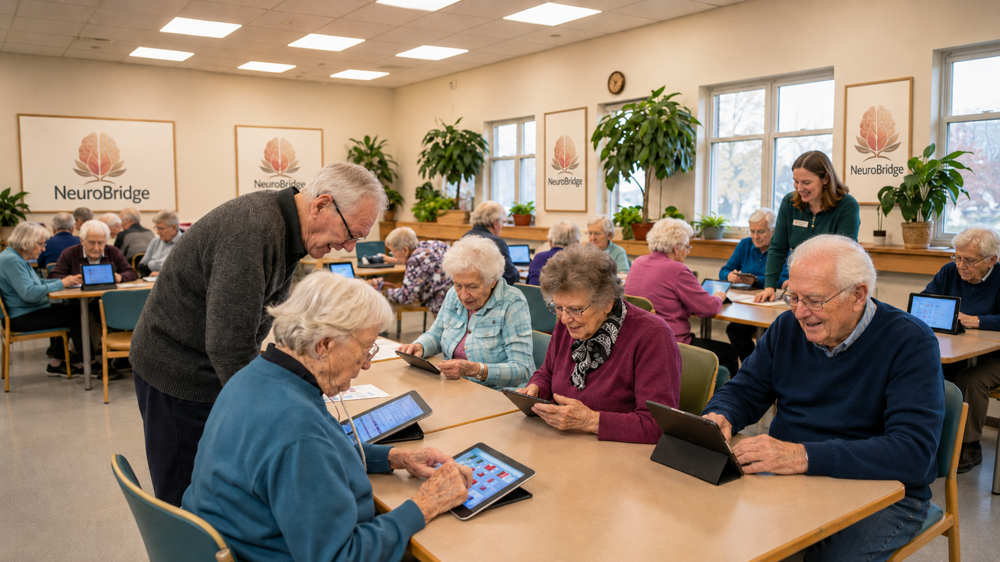
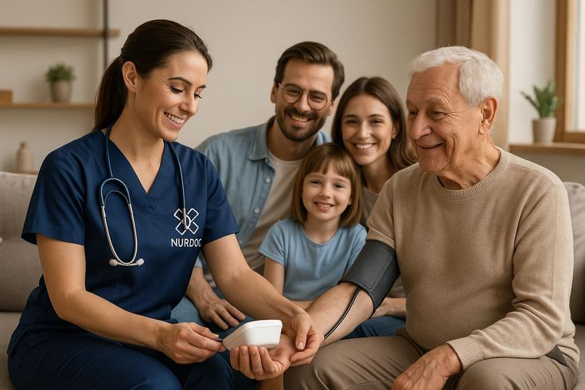
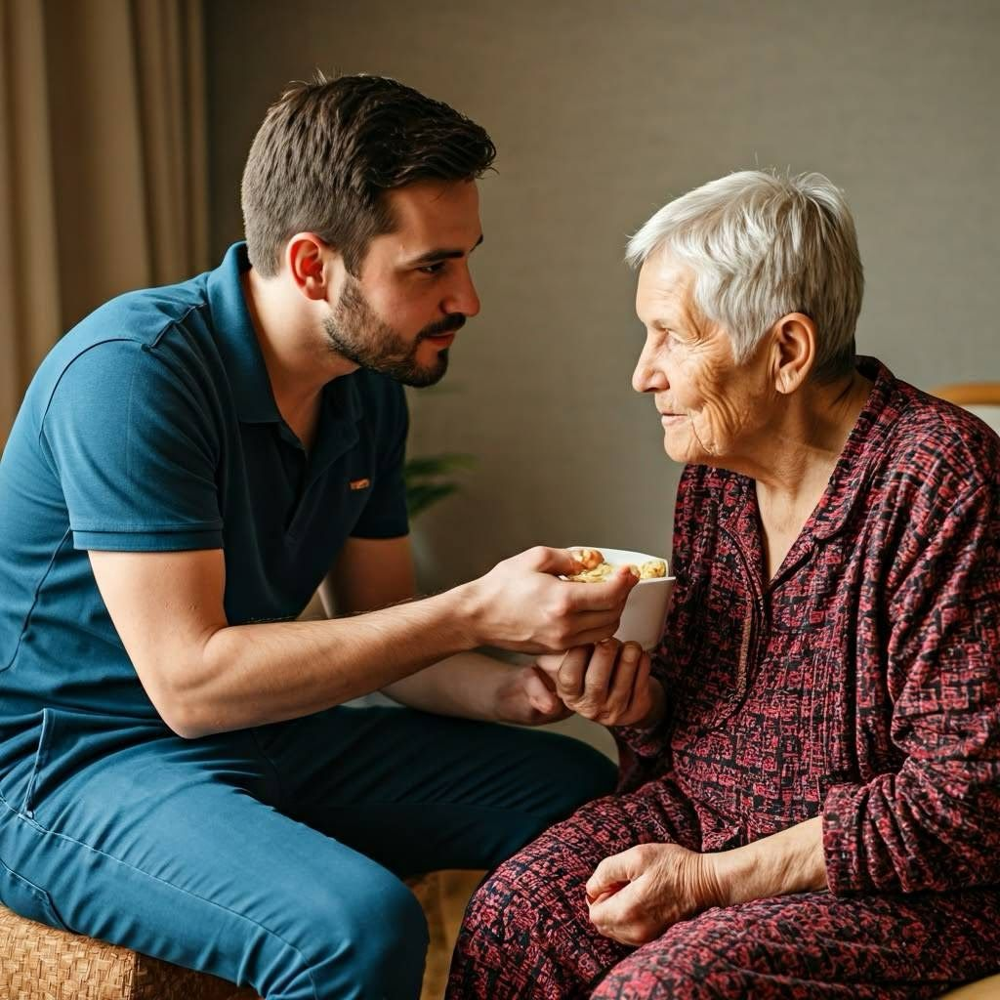

Daily cognitive practiceActivities and games

Cognitive rehabilitation platform
A connected cognitive rehabilitation platform
For patients, families, and care teams.
Daily cognitive activities, family memories, provider communication, appointments, and performance-only progress in one supportive platform.
Family supportMemories and encouragement
Care-team follow-upRecorded performance review
Secure role-based accessRole-based data access
Why NeuroBridge?

A clearer daily follow-up experience
Instead of separating daily practice, family support, provider communication, and reports, NeuroBridge brings them together in one organized platform.
- Simple patient experience with large, friendly actions.
- Family involvement through memories and encouragement.
- Care-team review with performance-only progress.
Core experiences
Everything NeuroBridge brings together


Care Teams
Care teams can review assigned patients, goals, activities, messages, appointments, and performance-only progress summaries.
Learn more
Safe boundaries
Supportive follow-up with care-team review
NeuroBridge provides coordination and activity support. It keeps progress performance-only for supportive follow-up and care-team review.
Daily practice
Activities and games support a gentle daily routine.
Family connection
Families can share encouragement and warm memories.
Care-team review
Doctors and therapists review performance-only progress.
NeuroBridge AI Companion
AI Chat Bot
Ask the NeuroBridge assistant about activities, family support, appointments, messages, and platform guidance.
- Platform navigation and guidance
- Appointment guidance
- Supportive guidance only. Not medical advice.

NeuroBridge connects daily cognitive practice with family support and care-team review.
Support a better quality of life for patients through consistent practice, family involvement, and professional care.
Connected care platform · Patients, families, and care teams · Clearer daily follow-upResources
View all resources
Helpful resources for patients, families, and care teams.
 For patientsUnderstanding Cognitive Rehabilitation
For patientsUnderstanding Cognitive RehabilitationSimple guidance for building confidence through supportive cognitive practice.
Learn more
For familiesSupporting a Loved OnePractical ways to share encouragement, memories, and meaningful moments.
Learn moreFor care teamsCare-Team CollaborationSupport clearer follow-up with organized, performance-only information.
Learn more GuidesActivities & Games GuideExplore gentle activities for memory, attention, reaction, and recall.
Learn more PrivacyPrivacy & Data SecurityUnderstand role-based access, clear boundaries, and protected information.
Learn moreHelpFAQFind clear answers about platform access, activities, and follow-up.
Learn more Daily practiceBuilding a Gentle Daily RoutineCreate a calm and consistent rhythm for everyday cognitive activities.
Learn moreFamily supportMemory Activities to Share TogetherTurn familiar stories and photos into warm moments of connection.
Learn more
Care-team guideMaking Follow-up More SupportiveKeep reviews focused, human-centered, and easy to understand.
Learn more